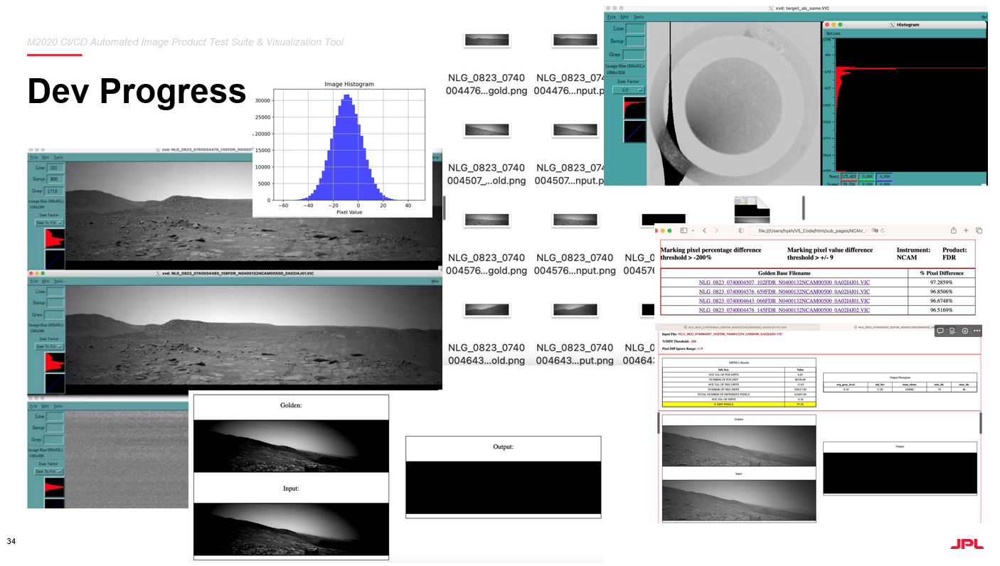

Mars 2020 Perseverence Rover Software Test Suite
June through August 2023
NASA Jet Propulsion Laboratory
Objective:
During the 10-week internship at JPL, I developed a general test suite and data visualization tools for the
Mars 2020 Perseverence Rover under the code 398N, the instrument data systems (IDS) team at JPL.
Work Responsibilities:
Supported a CI/CD test suite with 30+ test cases with Python and
Gherkin , supporting dozens of images and text product validations with different versions of algorithms.
Completed a full-stack project with IDS data queries, subprocess function calls, S3 cloud support, and HTML report generations.
Developed a Python GUI for user interaction locally and test parameter design.
Watch a demo HERE.
Collaborated with the IDS team through Git and Linux remote machines .
Skills Applied:
CI/CD algorithm and data structures
Technical documentation and writing
Software testing
Comments:
I received phenomenal mentorship from my team at JPL and developed many essential skills as a science software engineer.
I also gained extensive experiences with data structure design, reading and expanding code bases, and designing user-centric functionalities.
It also gives me a great sense of satisfaction to know that my work can contribute to the amazing mission of Mars 2020 and beyond.

Some screenshots of devlopment progress